- Главная
- Медиа
- Архивные видеоматериалы
Архивные видеоматериалы
Документальные фильмы и ролики о Восточном Казахстане. Видео размещено на YouTube.
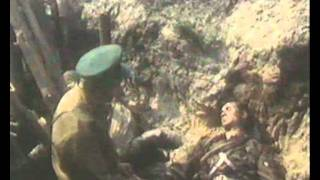
Работа посвящена воинам-казахстанцам, которые встретили фашистов на границе и тем, которые ушли на войну в июне 1941года из Усть-Каменогорска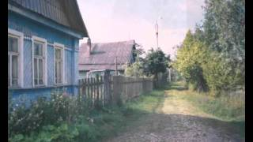
Документальный фильм, посвящён Герою Советского Союза Толегену Тохтарову, этого высокого звания он удостоен за подвиг в Московской битве посмертно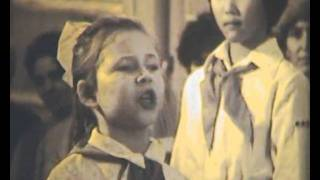
О подвиге 30 Гвардейской дивизии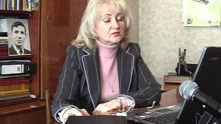
Документальный фильм о замечательном человеке, гражданине, краеведе и писателе С.Е.Черных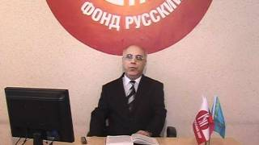
часть 1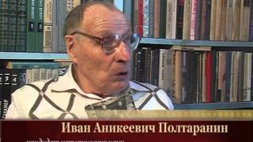
часть 2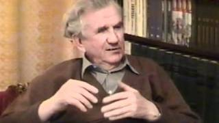
часть 3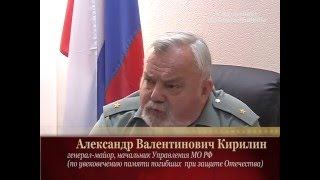
часть 4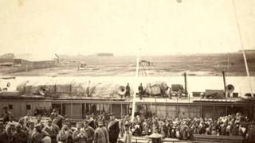
часть 1 - закладка Усть-Каменогорской крепости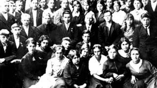
часть 2 - период Советской истории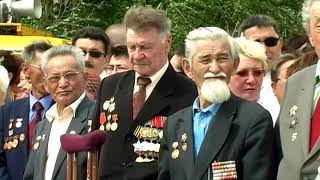
часть 3 - история Усть-Каменогорска в Новейший период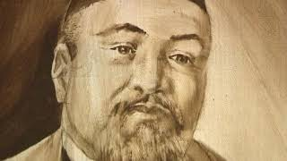
часть 1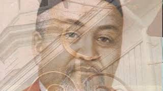
часть 2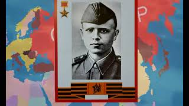
К 75-годовщине Великой Победы государственным архивом Восточно-Казахстанской области подготовлен видеоролик на тему «Ерлік – елге мұра. Ұрпаққа – Ұран. Подвиг- наследие народа. Гимн будущему». 75 лет со дня Великой Победы мы вспоминаем с глубоким уважением и почтением своих предков воевавших за нашу Родину. Очень важно, нам - нынешнему поколению, не забывать и рассказывать подрастающему поколению правду о войне, о ее Героях и их героических поступках.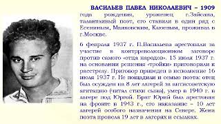
«Память, которой не будет забвенья».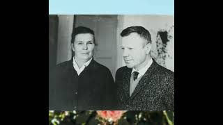
Посвящен видеоролик общественному деятелю города Зыряновска, председателю женсовета Зыряновской обогатительной фабрики — Денисовой Евдокии Лазаревне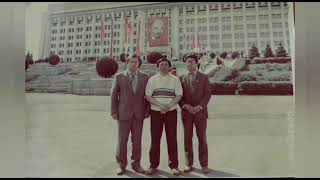
видеоролик посвященный Ким Николаю Николаевичу (1932-1995 г.г.)- начальник геолого-разведочной экспедиции, геолог, депутат Верховного Совета Республики Казахстан, награжден орденом Трудового Красного Знамени, лауреат Государственной премии СССР (1988 г.), (дело личного происхождения находится на хранении в филиале Алтай).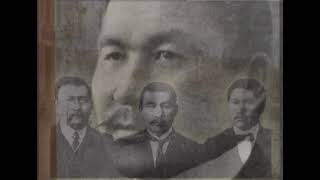
видеоролик посвященный 155-летию со дня рождения Алихана Букейханова видного казахского общественного деятеля, одного из лидеров партии «Алаш».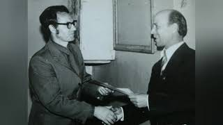
видеоролик о Шуваеве Владимире Тимофеевиче-архивисте Зыряновского филиала ГАВКО. краеведе, внештатном корреспонденте районных газет «Заря Востока», «Зыряновская нива», «Знамя труда», «Луч»- «Арай» из рубрики «Их имена в истории края»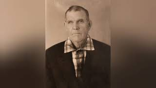
Герой Социалистического Труда, персональный пенсионер союзного значения, коневод колхоза им. Ворошилова, награжден орденами Трудового Красного знамени, Ленина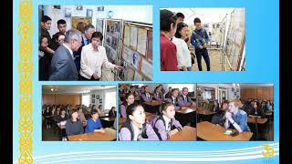
посвященный 30-летию Независимости Республики Казахстан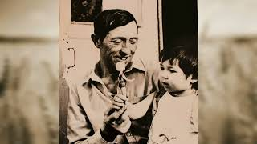
1938 года рождения — Герой Социалистического труда, механизатор совхоза «40 лет Казахстана» Большенарымского района, кавалер орденов Ленина, Трудового Красного Знамени.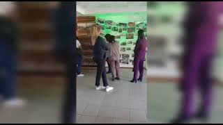
В рамках реализации Указа Президента Республики Казахстан от 19 января 2022 года № 780 «Об объявлении Года детей» 21 сентября 2022 года в КГУ «Государственный архив» управления цифровизации и архивов Восточно-Казахстанской области и его филиалах проведен День открытых дверей «Архив және болашақ ұрпақ».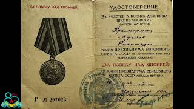
«Жеңісті жақындатқан жандар»Источник: e-arhiv.vko.gov.kz, снято 2026-11-09.